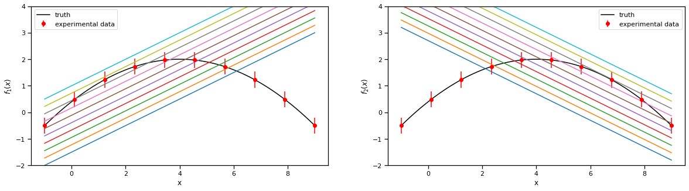
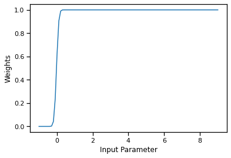

Linear BMM with full Bayesian calibration of coleman toy models¶
The models can be found in Coleman Thesis : https://go.exlibris.link/3fVZCfhl
This notebook shows how to use the Bayesian model mixing package Taweret for a toy problem.
Author : Dan Liyanage
Date : 19/21/2022
Steps for linear BMM¶
1. Get Models with a prediction method
2. Choose a Mixing method
3. Estimate the mixture weights (parameters in the mixture function) with user defined calibration method
To execute each step in this notebook we need to import the following from Taweret.
[1]:
import sys
import os
sys.path.insert(0, os.path.abspath('../../../../Taweret'))
[2]:
# Import models with a predict method
from Taweret.models import coleman_models as toy_models
# Mixing object with a likelihood method
from Taweret.mix.linear import linear_mix as LM
# Wrapper for the likelihood to be used with Bilby
from Taweret.calibrate.likelihood_wrappers import likelihood_wrapper_for_bilby
[3]:
# For plotting
import matplotlib.pyplot as plt
import seaborn as sns
# For calibration
import bilby
# For other operations
import numpy as np
import os
import shutil
[4]:
m1 = toy_models.coleman_model_1()
m2 = toy_models.coleman_model_2()
truth = toy_models.coleman_truth()
[5]:
g = np.linspace(-1,9,10)
plot_g = np.linspace(-1,9,100)
true_output = truth.predict(plot_g)
exp_data = truth.predict(g)
1. The models and the experimental data.¶
Truth
\(f(x) = 2-0.1(x-4)^2\), where \(x \in [-1, 9]\)
Model 1
\(f_1(x,\theta)= 0.5(x+\theta)-2\) , where \(\theta \in [1, 6]\)
Model 2
\(f_2(x,\theta)= -0.5(x-\theta) + 3.7\) , where \(\theta \in [-2, 3]\)
Experimental data
sampled from the Truth with a fixed standard deviation of 0.3
[6]:
sns.set_context('notebook')
fig, axs = plt.subplots(1,2,figsize=(20,5))
prior_ranges = [(1,6), (-2,3)]
for i in range(0,2):
ax = axs.flatten()[i]
ax.plot(plot_g, true_output[0], label='truth', color='black')
ax.errorbar(g,exp_data[0],exp_data[1], fmt='o', label='experimental data', color='r')
ax.legend()
ax.set_ylim(-2,4)
for value in np.linspace(*prior_ranges[i],10):
if i==0:
predict_1 = m1.predict(plot_g, value)
ax.plot(plot_g, predict_1[0])
ax.set_ylabel(r'$f_1(x)$')
if i==1:
predict_2 = m2.predict(plot_g, value)
ax.plot(plot_g, predict_2[0])
ax.set_ylabel(r'$f_2(x)$')
ax.set_xlabel('x')

2. Choose a Mixing method¶
[7]:
mix_model = LM(m1, m2, g, exp_data[0], exp_data[1], method='cdf', n_model_1=1, n_model_2=1, n_mix=2)
[8]:
mix_model.plot_weights(np.array([0.2, 10]),plot_g)

[9]:
#mix_model.mix_loglikelihood_test([0.25])
[10]:
mix_model.mix_loglikelihood(np.array([0.2, 10]), np.array([2]),np.array([1]))
[10]:
0.2897570171611727
[11]:
fig, ax = plt.subplots()
mix_prediction = mix_model.prediction(np.array([0.2, 10]), plot_g, np.array([2]), np.array([1]))
ax.plot(plot_g, m1.predict(plot_g, np.array([2]))[0].flatten(), label='model 1')
ax.plot(plot_g, m2.predict(plot_g, np.array([1]))[0].flatten(), label='model 2')
ax.plot(plot_g, mix_prediction.flatten(), label='BMM prediction')
ax.set_ylim(-2,4)
ax.legend()
[11]:
<matplotlib.legend.Legend at 0x7fa9b7eacc40>

[12]:
# sw = np.linspace(0.01,1,1000)
# likelihood = np.array([mix_model.mix_loglikelihood([s]) for s in sw]).flatten()
# fig, ax = plt.subplots()
# ax.plot(sw,likelihood,label='Mixture likelihood for step function')
3. Estimating the mixture weights¶
[13]:
likelihood = likelihood_wrapper_for_bilby(mix_model)
Here theta_0, theta_1 are CDF mixture function parameters
theta_2 is the model_1 parameter
theta_3 is the model_2 parameter
[14]:
# A few simple setup steps
label = "cdf_mixing"
outdir = "outdir"
priors = dict(theta_0=bilby.core.prior.Normal(0, 1, "theta_0"),
theta_1=bilby.core.prior.Normal(0, 1, "theta_1"),
theta_2=bilby.core.prior.Uniform(1, 6, "theta_2"),
theta_3=bilby.core.prior.Uniform(-2, 3, "theta_3"))
# priors = dict(
# theta_0=bilby.core.prior.Beta(2,2)
# )
# And run sampler
## If file exists, delete it ##
if os.path.exists(outdir):
shutil.rmtree(outdir)
result = bilby.run_sampler(
likelihood,
priors,
sampler="ptemcee",
ntemps=5,
nwalkers=100,
Tmax=10,
nburn=200,
nsamples=500, # This is the number of raw samples
threads=5,
)
result.plot_corner()
23:26 bilby INFO : Running for label 'label', output will be saved to 'outdir'
---------------------------------------------------------------------------
ModuleNotFoundError Traceback (most recent call last)
File ~/miniconda3/envs/test_env/lib/python3.8/site-packages/bilby/core/sampler/base_sampler.py:183, in Sampler._verify_external_sampler(self)
182 try:
--> 183 self.external_sampler = __import__(external_sampler_name)
184 except (ImportError, SystemExit):
ModuleNotFoundError: No module named 'ptemcee'
During handling of the above exception, another exception occurred:
SamplerNotInstalledError Traceback (most recent call last)
Cell In [14], line 18
16 if os.path.exists(outdir):
17 shutil.rmtree(outdir)
---> 18 result = bilby.run_sampler(
19 likelihood,
20 priors,
21 sampler="ptemcee",
22 ntemps=5,
23 nwalkers=100,
24 Tmax=10,
25 nburn=200,
26 nsamples=500, # This is the number of raw samples
27 threads=5,
28 )
29 result.plot_corner()
File ~/miniconda3/envs/test_env/lib/python3.8/site-packages/bilby/core/sampler/__init__.py:158, in run_sampler(likelihood, priors, label, outdir, sampler, use_ratio, injection_parameters, conversion_function, plot, default_priors_file, clean, meta_data, save, gzip, result_class, npool, **kwargs)
156 if sampler.lower() in IMPLEMENTED_SAMPLERS:
157 sampler_class = IMPLEMENTED_SAMPLERS[sampler.lower()]
--> 158 sampler = sampler_class(
159 likelihood, priors=priors, outdir=outdir, label=label,
160 injection_parameters=injection_parameters, meta_data=meta_data,
161 use_ratio=use_ratio, plot=plot, result_class=result_class,
162 npool=npool, **kwargs)
163 else:
164 print(IMPLEMENTED_SAMPLERS)
File ~/miniconda3/envs/test_env/lib/python3.8/site-packages/bilby/core/sampler/ptemcee.py:173, in Ptemcee.__init__(self, likelihood, priors, outdir, label, use_ratio, check_point_plot, skip_import_verification, resume, nsamples, burn_in_nact, burn_in_fixed_discard, mean_logl_frac, thin_by_nact, autocorr_tol, autocorr_c, safety, autocorr_tau, gradient_tau, gradient_mean_log_posterior, Q_tol, min_tau, check_point_deltaT, threads, exit_code, plot, store_walkers, ignore_keys_for_tau, pos0, niterations_per_check, log10beta_min, **kwargs)
139 def __init__(
140 self,
141 likelihood,
(...)
171 **kwargs
172 ):
--> 173 super(Ptemcee, self).__init__(
174 likelihood=likelihood,
175 priors=priors,
176 outdir=outdir,
177 label=label,
178 use_ratio=use_ratio,
179 plot=plot,
180 skip_import_verification=skip_import_verification,
181 exit_code=exit_code,
182 **kwargs
183 )
185 self.nwalkers = self.sampler_init_kwargs["nwalkers"]
186 self.ntemps = self.sampler_init_kwargs["ntemps"]
File ~/miniconda3/envs/test_env/lib/python3.8/site-packages/bilby/core/sampler/base_sampler.py:112, in Sampler.__init__(self, likelihood, priors, outdir, label, use_ratio, plot, skip_import_verification, injection_parameters, meta_data, result_class, likelihood_benchmark, soft_init, exit_code, **kwargs)
110 self.use_ratio = use_ratio
111 if not skip_import_verification:
--> 112 self._verify_external_sampler()
113 self.external_sampler_function = None
114 self.plot = plot
File ~/miniconda3/envs/test_env/lib/python3.8/site-packages/bilby/core/sampler/base_sampler.py:185, in Sampler._verify_external_sampler(self)
183 self.external_sampler = __import__(external_sampler_name)
184 except (ImportError, SystemExit):
--> 185 raise SamplerNotInstalledError(
186 "Sampler {} is not installed on this system".format(external_sampler_name))
SamplerNotInstalledError: Sampler ptemcee is not installed on this system
[ ]:
result.posterior['theta_0']
[ ]:
#sns.set_context(font_scale=100)
for i in range(0,4):
fig, ax = plt.subplots(figsize=(50,10))
ax.plot(result.posterior[f'theta_{i}'].values)
[ ]:
pos_weight_func = []
for sample in result.posterior.values[:,0:2]:
mean = mix_model.weights(np.array([sample]).flatten(), plot_g)
pos_weight_func.append(mean)
pos_weight_func = np.array(pos_weight_func).reshape(-1,len(plot_g))
[ ]:
per0,per5,per20,per80,per95,per100=np.percentile(pos_weight_func,[0,5,20,80,95,100], axis=0)
[ ]:
%matplotlib inline
fig, ax = plt.subplots()
ax.fill_between(plot_g,per5,per95,color=sns.color_palette()[4], alpha=0.2, label='90% C.I.')
ax.fill_between(plot_g,per20,per80, color=sns.color_palette()[4], alpha=0.3, label='60% C.I.')
ax.legend()
#ax.plot(plot_g, true_output[0], label='truth')
#ax.set_ylim(1.2,3.2)
[ ]:
result.posterior
[ ]:
pos_predictions = []
for sample in result.posterior.values:
sample = np.array(sample).flatten()
mean = mix_model.prediction(sample[0:2],plot_g, sample[2], sample[3])
pos_predictions.append(mean)
pos_predictions = np.array(pos_predictions).reshape(-1,len(plot_g))
[ ]:
pos_predictions.shape
[ ]:
per0,per5,per20,per80,per95,per100=np.percentile(pos_predictions,[0,5,20,80,95,100], axis=0)
[ ]:
%matplotlib inline
fig, ax = plt.subplots()
ax.fill_between(plot_g,per5,per95,color=sns.color_palette()[4], alpha=0.2, label='90% C.I.')
ax.fill_between(plot_g,per20,per80, color=sns.color_palette()[4], alpha=0.3, label='60% C.I.')
ax.plot(plot_g, true_output[0], label='truth')
ax.legend()
ax.set_ylim(-2,4)